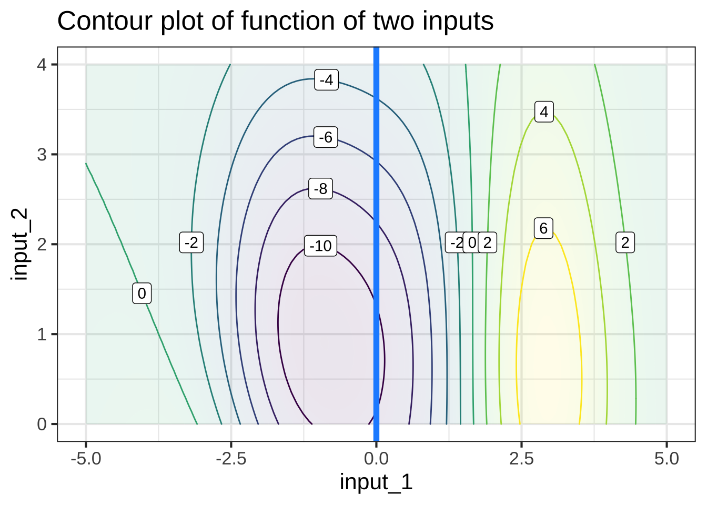
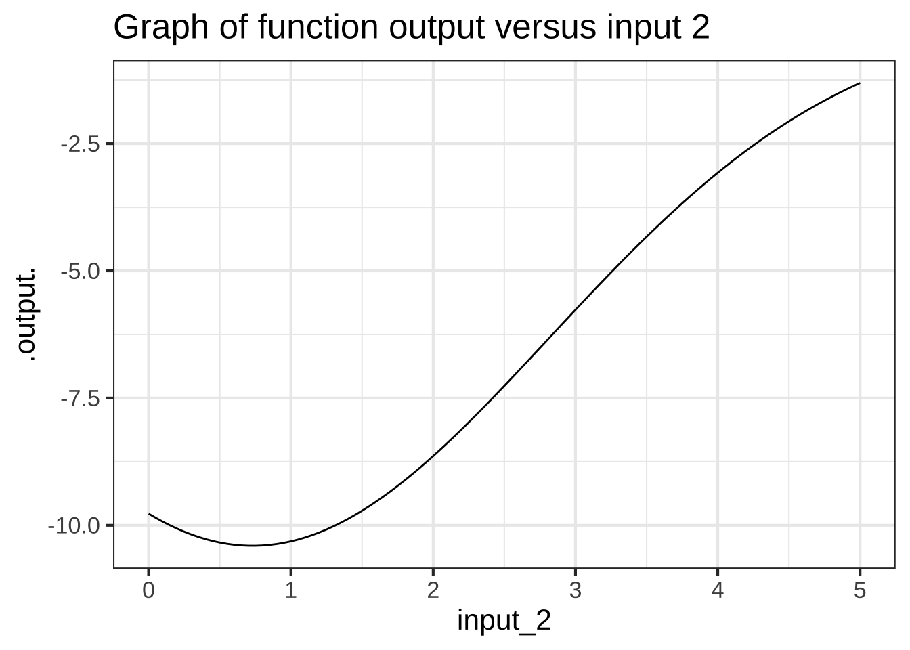

6 Graphics & function graphs
- [F-20] Understand that a mathematical graph consists of points in a composite space: the input \(\times\) output.
Scientific and statistical graphics are visual depictions of information and data. For displaying a function with a single input, mathematicians and other favor a particular style of graphics. This favored style is called a function graph, which has a specific technical meaning in mathematics. Notice that we’re writing “function graph” rather than “function graphic.” A function graph is a particular sort of graphic: there are many other types of graphics some of which we’ll use to display data or features of functions.  700
700
6.1 The graphics frame
Technical graphs are usually drawn in a graphics frame that has several components:
- The frame is a region on the piece of paper or computer screen that is marked off by a horizontal and a vertical axis.
- The horizontal axis stands for one quantity.
- The vertical axis stands for another quantity.
- Both the horizontal and vertical axes are drawn with a scale that enables you to translate between a numerical value and position.
Figure 6.1: An empty graphics frame with scales for both the horizontal and vertical axes.
6.2 Data graphics: the point plot
One of the most common uses of a graphics frame is to display visually two columns from a table containing data. Data are stored in a spreadsheet-like format called a data frame. There are many ways to access data frames and many different ways to store them. In CalcZ we supply data frames in the simplest possible way: giving them a name that you can use to refer to the data frame.
For instance, here is a small part of a data frame about the size of penguins in the Palmer Archipelago in Antarctica. 710
| species | body_mass | flipper_length | bill_length |
|---|---|---|---|
| Chinstrap | 3.600 | 19.3 | 4.57 |
| Chinstrap | 3.850 | 19.5 | 4.76 |
| Adelie | 3.300 | 18.7 | 3.62 |
| Gentoo | 4.300 | 20.8 | 4.38 |
| Chinstrap | 3.950 | 21.0 | 4.90 |
| Chinstrap | 2.700 | 19.2 | 4.69 |
| Gentoo | 5.650 | 22.4 | 4.95 |
| Adelie | 4.300 | 19.5 | 4.15 |
| Adelie | 3.325 | 19.0 | 3.85 |
| Chinstrap | 3.775 | 19.4 | 5.17 |
The output above shows what a data frame looks like. Now we need to look at how to use a data frame in an R command. The particular data frame shown just above has the name penguins in R. To refer to the data frame, just use the name.
Open a SANDBOX and give the name itself as a command. This simple command causes the data frame to be displayed on the screen.
penguinsYou should see as a result a table that can be scrolled through interactively with all 344 rows of the penguins data frame.
Looking at a data frame, or part of one, is sometimes what’s required. But in general you will use the name of the data frame of interest as an argument to an R function. Typically the argument will be named data = as you’ll see below.
The name penguins is very general and it wouldn’t be at all surprising if some other penguin fan or researcher created a different set of data with the same name. R, like many other modern languages, makes room for such multiple uses of a name by a facility called a namespace. R programmers can create their own namespace. This is not something we will do in this course. But it’s helpful to know when the namespace mechanism is at work. For instance, the particular penguins we’ve provided with this course comes from a namespace called palmerpenguins. Thus, the “full” name of the data fr is palmerpenguins::penguins. You may see such name constructions occasionally in exercises in this course. You don’t have to understand how namespaces work other than to know that when you are given the full name, you should use it, double colons and all.
Before you can use gf_point() to plot a pair of columns from a data frame, you have to know the names of the columns. A useful function for this is names(). Similarly, to look at the first few rows, use the head() function. Try these commands in a sandbox:
A point plot displays two columns from a data frame. Each row in the data frame is represented by one point in the graphic. For instance:
gf_point(flipper_length_mm ~ body_mass_g,
data=penguins) Figure 6.2: Data from 344 penguins on flipper length (mm) and body mass (g).
Each penguin has a specific mass and flipper length. If you focus your attention on the penguins with a mass of around 4 kg (that is, 4000 gm), you can see that the different penguins have a variety of flipper lengths. That’s typical natural variability.
6.3 Function graphs
Back in Section ?? you saw how to use R to create a graph of a function with a single input. (Review that section now if you’ve forgotten.) The slice_plot() function takes two arguments:
- A tilde expression giving the function you want to plot and naming the horizontal axis.
- The domain to use when making the plot.
For example:
The tilde expression can be more elaborate of course, for instance sin(z)*z + z^2 ~ z, but it will always have the name to be used for the horizontal axis on the right-hand side of the tilde character.
The domain to be shown in the graph is specified using a special-purpose function, called domain(). The argument to domain is named: Use the same name as on the right-hand side of the tilde expression then an equal sign, then a collected pair of numbers specifying the lower and upper ends of the domain. The collected pair must always be given as the arguments to a very basic function named c(), which simply collects it’s arguments. Later, when we graph functions with two inputs, you’ll see why domain() is set up this way.
6.4 Graphics layers
You will often want to compare to functions, or compare a function to data. You can do this using the ordinary graphics functions, e.g. slice_plot() or gf_point(), arranging things so that both types of graphics are drawn together in the same graphics frame. To create this kind of compound graphic, arrange the individual graphics commands into a pipeline, which is a list of commands connected together by %>%. Your pipeline might include two commands or twenty, depending on how complicated is the graphic you want to draw. As long as you use %>% after each command, the next command is taken to build upon the previous command. The very last command in that pipeline should not be followed by %>%.” 720
Here is an just-for-demonstration plot composed from three graphs, each displaying one of the pattern-book functions. At the start of the pipeline, the domain() must be given explicitly as an argument to slice_plot(). You’re welcome to specify other domains in the commands further along the pipeline, but if you don’t the original domain() will be passed down the pipeline.
slice_plot(dnorm(x) ~ x, domain(x=c(-4,4))) %>%
slice_plot(pnorm(x) ~ x, color="red", size=2) %>%
slice_plot(sin(x) ~ x, color="green", size=4, alpha = 0.2)
Just to show how these things are done, the functions have been drawn in different colors, different widths (e.g., size=2) and different levels of transparency (e.g. alpha=0.2). You can use such styling arguments in any slice-plot.
6.5 Data and functions
In Figure 6.2, the data point plot of the penguin flipper length vs body mass, there are generally multiple penguins with the same body mass but different flipper lengths. The overall impression is that of a cloud of points.
When we construct a function to model the pattern observed in that cloud, we need to respect the mathematical definition of function, part of which is that a function has only one output for any given input.
Figure 6.3: Connecting the penguin data points with lines (left) doesn’t directly describe any sensible mathematical function. We use modeling to create a smooth function (right) that stays close, but not too close, to the data points.
To create the model of flipper length as a function of body mass, we used one of a set of techniques called machine learning. That is, we didn’t specify that the form should be an exponential or a gaussian or a sigmoid or any other particular shape. We simply asked the computer to figure out a smooth function that stays close to the data. The result, as it happens, was a sigmoid. 730
6.6 Inputs to output
You can easily evaluate a function for a given input from its graph. As you know, just put your finger at the horizontal coordinate for the input. Then move your finger upward to reach the point on the curve directly above that horizontal coordinate. You read off the value of the function at that input by reference to the scale on the vertical axis. 740
It’s not possible to show with a graph the whole of a function whose domain is \(-\infty\) to \(\infty\). Consequently, when drawing a graph we choose to show only that part of the domain that we expect will be relevant to our needs.
Sometimes, the graphic’s domain includes parts that are not in the domain of the function being drawn. In such cases, the function’s graph does not extend into the invalid part of the graphic domain, as in this plot of a function whose domain is only the positive numbers.
This function has a range that runs from \(-\infty\) to \(\infty\), but the limits of paper and display mean that we can show only part of this range. With experience, you’ll learn to read the hints in a graph that the underlying function might have a range larger than the one shown in the graphic.
6.7 Outputs to inputs
Graphs are relatively modern, coming into mainstream use only in the 1700s. Much of mathematics was developed before graphs were invented. One consequence of this is that function tasks that are easy using a graph might be very hard with the previous ways of implementing functions. This is analogous to the way that arithmetic is pretty easy with Arabic numerals, but really hard with Roman numerals. 750
A function graph makes it easy to evaluate the function inverse. For all the basic modeling functions we have a way to calculate numerically the output for any given input (in the function’s domain).
Often, working with a function goes another way: you know the output and you want to find a corresponding input. It’s easy to do this with a graph. Pick the position on the vertical axis that represents the given input. Then trace horizontally to where the ink is. From there, trace vertically to read off the value of an input that would produce the given output.
Mathematicians are careful to distinguish between functions where there is one and only one possible input that generates each given output, and functions where there can be more than one input that generates the same output. (Mathematicians use the word unique to mean “one and only one.”) Functions with a one-to-one relationship between output and input are called “invertible.”
Invertible or not, it is a common procedure for working with functions to find an input corresponding to a specific, given output. In high-school algebra, this was called “solving for \(x\).” A special case of solving is finding the roots of a polynomial. The name we give to the procedure is zero finding, which correctly points out that we are trying to find an input.
6.8 Graphs of functions with two inputs
We can draw graphs of functions with two inputs. Now the points need to be marked in a 3-dimensional space: one axis for each of the two inputs and another axis for the output. Like this: 760
Figure 6.4: A graph of a function of two inputs is a surface.
It is very hard to read a graph of a function with two inputs. Think of the graph as a kind of tent suspended over a domain of ground. The graph itself is a surface. To show the graph on a display, some tricks of the trade are used: color to give an additional scale for the output; computer graphics to let us rotate the surface to look at it from various perspectives, added grid lines and marks on the surface to help us read out the numerical value.
6.9 Contour plots
A mathematical graph is just one way to draw a picture of a function with two inputs. There are other ways. One helpful mode of picture is called a contour plot, familiar to many non-mathematicians in the form of topgraphical maps showing landscape elevation as a function of latitude and longitude. Here’s a contour plot of the same function shown in the previous graph: 770
Figure 6.5: A contour plot displays the surface in the same manner as a topographical map shows the terrain. This contour plot is a topographical map of the mathematical graph in Figure 6.4.
It may take some practice to learn to read contour plots fluently but it is a skill that’s worthwhile to have. Note that the graphics frame is the Cartesian space of the two inputs. The output is presented as contour lines. Each contour line has a label giving the numerical value of the function output. Each of the input value pairs on a given contour line corresponds to an output at the level labeling that contour line. To find the output for an input pair that is not on a contour line, you interpolate between the contours on either side of that point.
For example, the input pair (0, 0)—which is at the bottom of the frame, midway from left to right—falls between the contours labeled “20” and “22.” This means that the output corresponding to input (0, 0) is somewhere between 20 and 22. The point is much closer to the contour labeled “20,” so it’s reasonable to see the output value as 20.5. This is, of course, an approximation, but that’s the nature of reading numbers off of graphs.
Often, the specific numerical value at a point is not of primary interest. Instead, we may be interested in how steep the function is at a point, which is indicated by the spacing between contours. When contours are closely spaced, the hillside is steep. Where contours are far apart, the hillside is not steep, perhaps even flat.
Another common task for interpreting contour plots is to locate the input pair that’s at a local high point or low point: the top of a hill or the bottom of a hollow. Such points are called local argmax or local argmin respectively. The output of the function at a local argmax is called the local maximum; similarly for a local argmin, where the output is called a local minimum. (The word “argmax” is a contraction of “argument of the maximum.” We will tend to use the word “input” instead of “argument,” but it means exactly the same thing to say “the inputs to a function” as to says “the arguments of a function.”)
Here are some additional tasks which you should learn to perform at a glance when reading a contour plot:
-
Start at a given input pair and determine two directions:
- the direction to move which is most steeply uphill,
- the direction to move which will keep the function output the same.
Translate a small region of a contour plot into the word for a corresponding geographical feature with that topology: hills, valleys, crests, coves, hollows, and so on.
6.10 Slice plots
As mentioned before, mathematical modeling is the process of constructing mathematical representations of situations or phenomena of interest. In CalcZ, we are primarily interested in using functions as such representations. 780
Almost always, when mathematically modeling a real-world situation or phenomenon, we do not try to capture every nuance of every relationship that might exist in the real world. We leave some things out. Such simplifications make modeling problems tractable and encourage us to identify the most important features of the most important relationships.
On the other hand, it’s easy to go wrong and leave out something that’s important. To mitigate this risk, many modeling projects involve a modeling cycle where we propose a candidate model, examine the consequence of that model to see if it corresponds well to the parts of reality that are important to us in our task, and modify the model as needed to produce a new and better candidate. 790
In this spirit, it’s useful always to assume that our models are leaving something out and that a more complete model involves a function with more inputs than the present candidate. The present candidate model should be considered as a slice of a more complete model. Our slice leaves out one or more of the variables in a more complete model.
To illustrate this, suppose that we have a “more complete model” in the form of a function of two inputs, as shown in the contour plot below.
As you become practiced reading contour plots, you might prefer to read this one as a hilltop (shaded yellow) side-by-side with a hollow or bowl (shaded purple), with green, almost level flanks at the left and right edges of the frame.
The most common forms of slice involve constructing a simpler function that has one input but not the other. For example, our simpler function might ignore input #2. There are different ways of collapsing the function of two inputs into a function of one input. An especially useful way in calculus is to take the two-input function and set one of the inputs to a constant value.
For instance, suppose we set input #2 to the constant value 1.5. This means that we can consider any value of input #1, but input #2 has been replaced by 1.5. In Figure 6.6, we’ve marked in red the points in the contour plot that give the output of the simplified function. 795
Figure 6.6: Left: A slice through the domain of a contour plot. Right: The value of the function along that slice, presented as a mathematical graph, as generated by slice_plot().
Each point along the red line corresponds to a specific value of input #1. From the contours, we can read the output corresponding to each of those values of input #1. This relationship, output versus input #1 can be drawn as a mathematical graph (to the right of the contour plot). Study that graph until you can see how the rising and falling parts of the graph correspond to the contours being crossed by the red line.
Slices can be taken in any direction or even along a curved path! The blue line below the slice constructed by letting input #2 vary and holding input #1 and the constant value 0.
